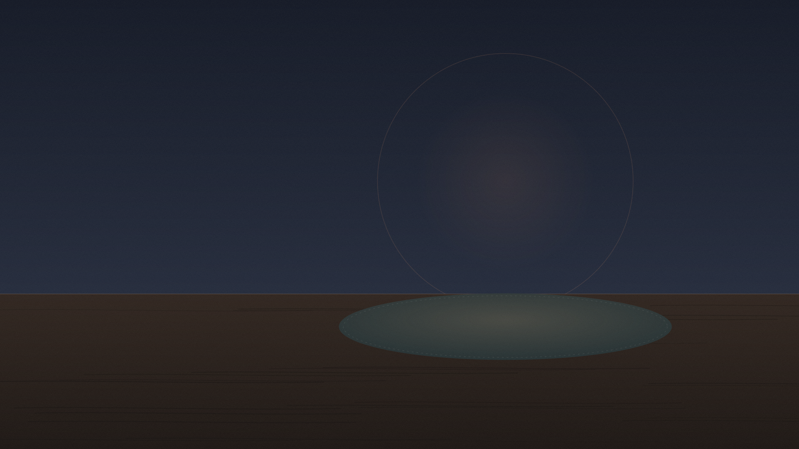
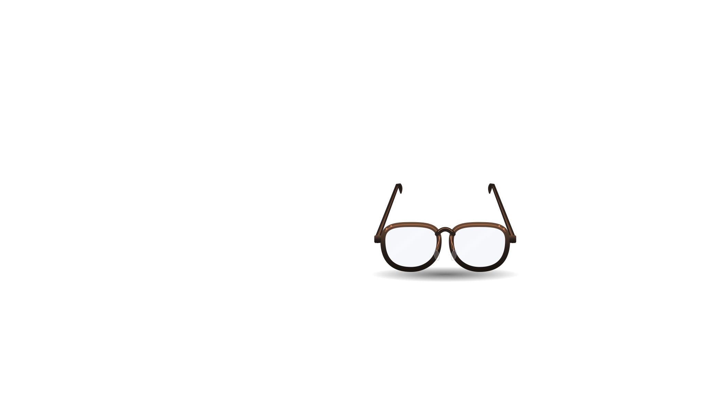
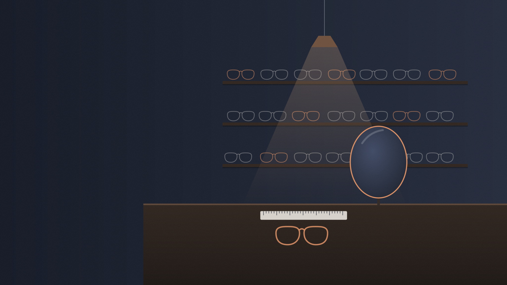
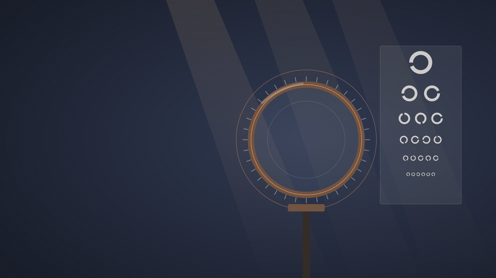
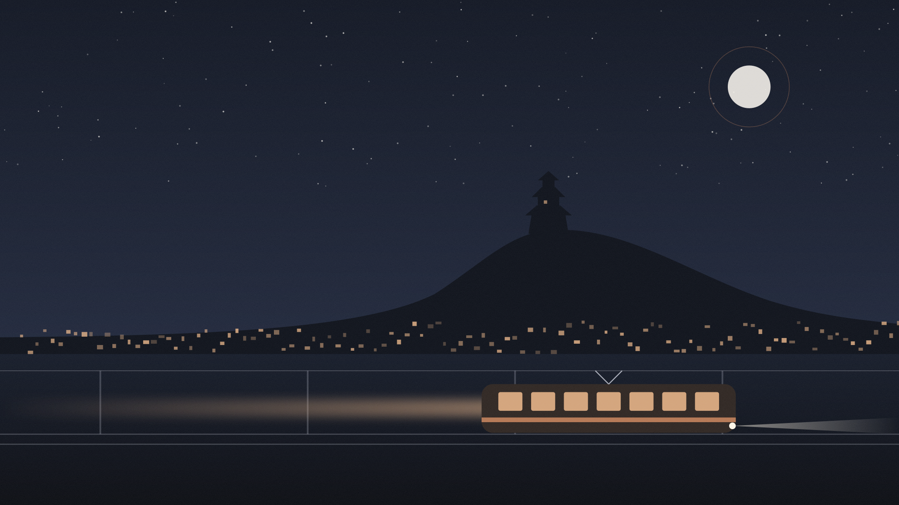
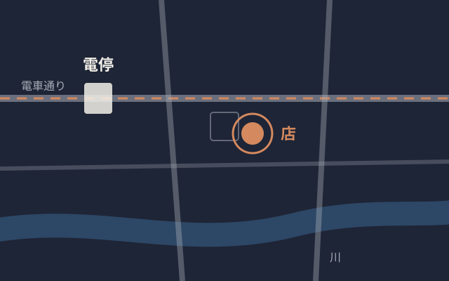

-
松山の小さな眼鏡店
見え方を、
顔に合わせて
仕立てる。架空の店舗の制作作例です
-
フレームは、
顔の幅から。 -
レンズは、
目の距離から。 -
テンプルは、
耳の高さから。


-
測る
鼻の高さ、
耳の位置まで。 -
見比べる
かけ比べて、
決める。 -
持ち帰る
帰り道の灯りが、
くっきりと。
仕立ての流れ
一人ずつ、時間をかけて合わせます。来店は予約制です。
- 来店予約制
- いまお使いの眼鏡があれば、持ってきてください。
- 測る約30分
- 視力と、目と目の距離、鼻と耳の高さを測ります。
- 選ぶ
- 顔の幅に合うフレームを、何本かかけ比べて決めます。
- 受け取り約1週間
- かけ心地を見ながら、その場で調整してお渡しします。
料金の目安
フレームとレンズを合わせた金額です。度数やレンズの種類で変わります。
| 組み合わせ | 目安 |
|---|---|
| フレーム＋単焦点レンズ | 28,000円〜 |
| フレーム＋遠近両用レンズ | 48,000円〜 |
| 度付きのサングラス・特殊なレンズ | 要相談 |
作例のための架空の価格です。
店の案内
- 営業時間
- 11:00〜19:00
- 定休日
- 水曜日
- 場所
- 松山市 ○○町（架空）
- 来店
- 予約制です。下のフォームから希望の日時をお知らせください。

来店の予約
希望の日時を選んでください。本番のサイトなら、届いた希望をもとに店から連絡して日時を決めます。